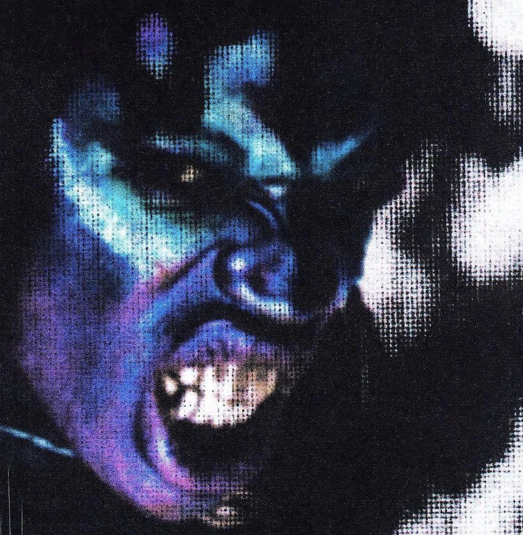

Hello, As many of you know me, I have been a music fan for a while and this is my firse ever project to have worked on and curate for people to hear.
This album does not consist of my own vocals; it is an artist known as Lancey Faux.
I have been a big fan of Lancey for years, I have been following since his rollout of his album, 'LIFE IN HELL', which is what deeply inspired me to make this project. Lancey has made a lot of music around this era, alost all of it being unfinished and unpublished. Using my efforts, I decided to make an ultimate maximalised version of what I decided to be the best version of LIFE IN HELL
This profect is a work-in-progress. These are the few tracks I have worked on so far. Will be adding more and more. The provided trackes are finished (some rough mixing), feel free to provide feedback.